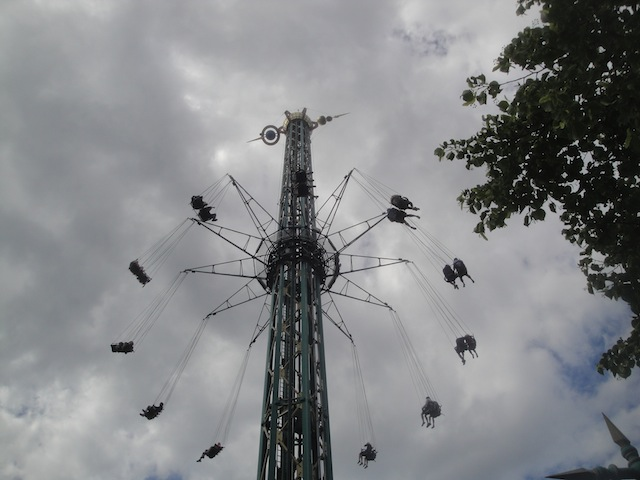
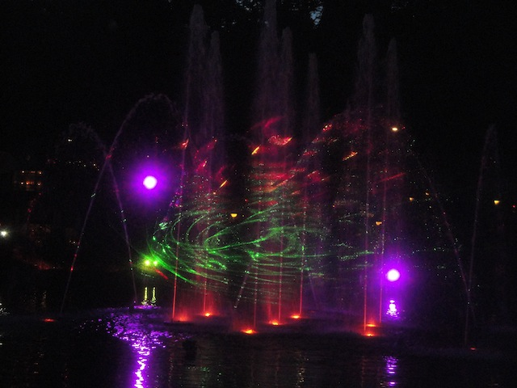

Tivoli Gardens is one of those parks that you might have heard about if you're not a roller coaster enthusiast. It's not world famous or anything, but this park is semi-well known. It's certainly well known all around Copenhagen. If you are a Danish person, you almost certainly know about Tivoli Gardens, regardless of whether you are a roller coaster enthusiast. For you see, Tivoli Gardens is known for a wide variety of reasons. But mainly for all the lights it has. It's known as the Lights of Tivoli. But we'll take about that later. Unlike a lot of parks, Tivoli Gardens is right smack dab in the middle of the city. It's not on the outskirts or anything. Nope. It's right in the middle of the city. Hell, it's generally considered to be one of the standard tourist attractions for people visiting Copenhagen. And honestly, who can blame them. Tivoli Gardens is freaking awesome! It's very spacious, has a lot to do, and has a lot of good rides, including some really good coasters, such as one of the ultra-rare Scenic Railways, as well as a cute, but fun B&M Floorless Coaster. And everything that Tivoli Gardens does, it does it really well. This is a place that you can go to just unwind, and really have a great time. There are little touches all around the park that if you slow down and really take the park in, you'll notice and really come to enjoy. I know there's a lot of debate as to what was the first amusement park ever (Spoiler alert. It was its next door neighbor, Bakken), there's no denying it. Tivoli Gardens was the first ever Theme Park. Tivoli Gardens was the first park that really themed all of its rides and roller coasters. They didn't just have a roller coaster, their Rutschebanen had mountains and was themed to mountaineering. It put an emphasis on theming and taking you to a whole new world, rather than just plopping a bunch of rides down for you to ride. In fact, it was Tivoli Gardens that inspired Walt Disney to create Disneyland, which is pretty much the most famous theme park in the world and changed the whole game. So yeah. Anyone out there who loves Disneyland, you can thank Tivoli Gardens. And yeah. You can totally tell when you visit the park today.
Here are the reviews of all the Flat Rides at Tivoli Gardens. And I have to admit. It has a great flat ride collection. One of my favorite flat ride collections out of any part. Let's start out with what is by far, their most unique flat ride and my personal favorite in the park, Vertigo. Or as some people like to dub it, Plane on a Stick (No. That's not plane on a stick. The real plane on a stick is in Tibidabo). But what while it's not the official plane on a stick, it is not only a really unique ride, but it's a really great ride. The closest ride I can think of is similar to this ride would be Speed @ American Fairs. It's one of those super rare flat rides that feels like you're diving straight towards the ground from 100 ft up, mimicking the first drop of X2. Except Vertigo can do one thing that Speed and other boosters can't. It flips. Yes, I know Speed does flip. But Vertigo flips on a different axis. So it throws you off even more. You get some laterals while flipping. And it's just crazy. And don't get me started on the amount of Gs you will pull on this ride. Good god! Expect to this ride pop up on our Top 10 Flat Rides List. I would tell more parks to buy rides like this. Well, there is one flaw that Vertigo has, and sadly, it's the reason this ride won't spread. Capacity. The capacity on this ride is a f*cking nightmare. So Vertigo may be awesome, but you'll either have to run to it first thing in the morning, or wait late at night when most people have essentially left. All right. We should probably move onto the other flat rides in the park. Their 2nd best flat ride would be Himmelskibet, their Star Flyer. It's a decent sized Star Flyer, I'd say it's around 200 ft. So this isn't one of those dinky little puny Star Flyers. It's a Star Flyer of decent size. But not only is it a Star Flyer of decent size, but it by far, has the best location of any Star Flyer I have ever ridden. I mean, you're just flying up above Copenhagen. You aren't towering above the skyline as Copenhagen, while it's not a city with a bunch of skyscrapers, it does have some big buildings, and you're up among them while on the Star Flyer. It's just amazing to look out your window while riding the Metro and then see the Star Flyer among all the buildings. It's just great. Granted, the rules for the Star Flyer are painful, stupid, and make me shake my head, but I still really enjoy it. Then there's Aquila, which is their Air Race. It's just an Air Race, which are amazing rides. I'm so happy that these things have been spreading like wildfire recently. But not only is this an Air Race (these things made my Top 10 Flat Rides List), but they theme it and instead of just having the typical plane theme, they customize it and it fits in beautifully with the park. Our first flat ride that isn't a Top 10 Flat Ride would be their Space Shot, Detgyldnetarn. Yeah, this is far from the best S&S Tower, but it's at Tivoli Gardens, it has a great theme, so it's still really good. Even if the launch and drop aren't that great, it's something worth riding because just like the Star Flyer, the view makes it worth it. It just looks so beautiful. And those are just their big flat rides that you are going to notice. There are so many other flat rides that they have. They have a breakdance that spins like crazy, and I have to talk about their bumper cars. The best I have ever been on. First off, they're made of fiberglass, so that you really get a hard impact. I like that. And they're set up so that they work like a shooting dark ride. You apparently shoot the other cars, but it wasn't working when I was there. Love that. They apparently have this magic carpet, only its inverted. I didn't ride it, but it does look fun. They have this one Dumbo style ride, except this one is themed to fish. They have a carousel, only with more exotic animals. After doing some research, there appears to be this Dragon ride. I don't ever remember seeing it, and don't know much. But it does look cool. There's this condor style ride that looks like a lot of fun. And of course, there's some sort of Music Express as well as some kiddy flat rides. I pretty much love all of the flat rides here. One of the best flat ride selections out of any park I've been to that are both really good and fit in with the park beautifully.
Make sure you ride this ride. It's really fun and fairly rare. =)

The view of Copenhagen on this ride is amazing.
Dark Rides
Here are the reviews of all the Dark Rides at Tivoli Gardens. Tivoli Gardens has a decent dark ride collection. It doesn't rival Disney (but to be fair, almost no parks do), but it's still a really good dark ride collection and it has a really nice charm of its own. All right. There's two dark rides I want to go over at Tivoli Gardens. The first one would be their shooting dark ride, Minen. This is an...odd dark ride. I don't understand what this ride is about at all. I know it features a giant pig and other animals, and its themed to mining. I'm not sure what I'm shooting. Maybe this would make more sense if I spoke Danish. But I still enjoyed it. I'll certainly give you this. It's a unique dark ride. I can't think of any shooting dark ride like it. The second dark ride I want to discuss is Den Flyvende Kuffert, AKA The Hans Christian Anderson Ride. Seriously, this ride just goes over all the different Hans Christian Anderson stories. It's nice to see the different stories, especially the ones that had been turned into Disney Movies, like The Little Mermaid and The Snow Queen (Frozen). It's really cool to see what these stories are like outside the Disney lens that pretty much dominate both of those stories. It's not a great dark ride, but I just really enjoyed it. So yeah. They may just be two dark rides, but both are indeed enjoyable.
"Damn! Prince Eric still doesn't want to kiss me! And I'm running out of time! Better lose the seashell bra!"
Water Rides
Tivoli Gardens has no water rides, unless you want to count the paddle boats in desperation. What a shame. I think Tivoli Gardens would benefit from a well themed log flume or rapids ride.
Dining
Here are the reviews of all the resteraunts at Tivoli Gardens. And yeah. Aside from the lack of water rides, this is one area of the park that I would say isn't the best. Now don't get me wrong. There's nothing wrong with the food at Tivoli Gardens. I thought that it was all fine. But nothing really seemed to stand out. I know what I had for lunch was just a hamburger. It was good and all, but...it was just a hamburger. Basically, it was just Danish fast food, which isn't that much different from American fast food. OK, lets look at the website and see what resteraunts they have. They have a steakhouse, a brewery, a Japanese resteraunt, a French resteraunt, a BBQ resteraunt, an American Diner, two Italian resteraunts, a pirate themed restarunt, a fancy resteraunt, and several that claim to be serving authentic Danish cuisine. Oh, and apparently the Wagamamas is inside the park. If that's the case, then I ate there as well (Seriously, how the hell has Wagamamas not caught on in America?). OK. Apparently that steakhouse I mentioned was the steakhouse I went to in Copenhagen. And it was actually really good. I know I listed a bunch of sit down resteraunts in Tivoli Gardens that I never really paid attention to that I'm sure are very good. One reason I'm suspecting that they offer all that in Tivoli Gardens is that they're right in the middle of the city. And Copenhagen has A LOT of resteraunts to choose from. In fact, you don't need to buy admission into Tivoli Gardens to eat at some of the restearunts in the park as they're right on the edge and you can just come in, as I discovered that the steakhouse was part of Tivoli Gardens. So even if you don't go to Tivoli Gardens, you just might eat there without realizing it. Hell, they up until recently, had one of the best resteraunts in the world (I'm shocked to hear that Noma is closing. I would've eaten there, except I saw their prices). But yeah. Copenhagen has a lot of good dining, and you can very easily leave Tivoli Gardens and eat wherever in Copenhagen, a world famous city. So Tivoli Gardens definetly has to have some good resteraunts. I'm not sure how good they are, but considering how much I enjoyed the rest of Tivoli Gardens, I'm sure the food in their resteraunts is good.
The steak here is really good.
Theming and Other Attractions
Here are the reviews of all the other stuff at Tivoli Gardens. And oh boy. Tivoli Gardens has a LOT of other stuff. First off, the theming in this park is really good. It doesn't necesarrily take you to whole new lands, but it just engrosses the entire park in gardens and really spruces up the entire park. And to be fair, they do have some themed areas. Particuarly an Asia themed area. But aside from that, it's just a ton of theming that makes the park so much prettier. And honestly, as far as other stuff to do, Tivoli Gardens has a lot. First off, lets talk about their fun house. Yeah, Tivoli Gardens pretty much falls into the same cliches as all the other European parks, as essentially all the European parks have some sort of fun house. And credit where credit is due. The one at Tivoli Gardens is actually really good. So definetly make sure you check it out. And as far as other stuff, we're just getting started. You see, Tivoli Gardens is right in the middle of Copenhagen, and it sort of functions as just a big park for a lot of the Copenhagen residents. A lot of people will go for an afternoon, ride a couple rides, and then go out and just relax in the park. Hell, apparently the park has a lot of local shows and local acts playing. It sort of acts as a meeting ground, and almost like a place where upcoming groups can get a chance to play and perform for an audience. But if we're going to talk about shows, we have to talk about by far the most famous show in Tivoli Gardens. The lights of Tivoli. Now this part of Tivoli Gardens is famous. Just all the lights they use to make it glow. So yeah. Don't miss that.
Hey. Not a bad fun house. =)
You never know what sort of local thing may be going on at Tivoli Gardens.

Ooh. The lights. So pretty. Must stare.
In Conclusion
Tivoli Gardens is just an all around great park. I seriously can not think of any flaws with this park. OK, maybe the fact that they don't have a water ride. But you know what? F*ck it! They're still doing great! It is still one of the best and most famous theme parks in the world. No seriously. Just look at our Top 10 Theme Parks List. It really is one of my favorite parks in the world. Mainly because it just has so much. Seriously, the balance of this park is just phenomenal. While the roller coasters here may not be the best, they are a lot of fun with one of the few Scenic Railways in the world and a small, but fun B&M Floorless Coaster. The flat rides are really good, and include a really good and rare flat ride. The dark rides may not be anything special, but they're fun. And of course, there's the lights of Tivoli to look at at night. And the entire park is just a place where you can take it easy and relax. There's a reason that this was the park that inspired Walt Disney to create Disneyland. It's a great place to spend a day, relax, and just have a good time. I can not recommend Tivoli Gardens enough.
Enthusiast FAQs.
*Are there kiddy coaster restrictions? - No. Karavan has no restrictions at all.
Tips
*Get plenty of rides on Rutshebanen and Daemon
*Do Vertigo either early in the morning or late at night.
*The main reason I have POV shots of the coasters is because I was there for a special event. The park is not POV friendly in normal operating hours.
*Beware about the anti-zippered pocket bullsh*t on the flats. ESPECIALLY the Starflyer.
*Don't treat Tivoli Gardens as a credit whoring stop. Really explore the park.


{kind=link}